This report documents the end-to-end engineering, troubleshooting, and deployment of a High-Availability (HA) LAMP stack utilizing a 4-node cluster deployed on OpenStack (MicroStack). The project required establishing internal Virtual Private Cloud (VPC) networks, deploying isolated security groups, navigating strict hypervisor resource schedulers, diagnosing multi-layer network encapsulation blockages (MTU/VXLAN), and configuring an Nginx reverse-proxy load balancer to distribute traffic across a dynamic PHP/MySQL backend.
| Node Name | Role | Private IP | Public (Floating) IP |
|---|---|---|---|
| ha-db-node | Database Backend (MySQL) | 192.168.100.59 | - |
| ha-web-node-1 | Apache Web Server | 192.168.100.249 | - |
| ha-web-node-2 | Apache Web Server | 192.168.100.12 | - |
| ha-lb-node | Nginx Load Balancer / Bastion | 192.168.100.67 | 10.20.20.133 |
To enforce strict zero-trust network isolation, dedicated Security Groups were created for each tier of the architecture. Instead of relying on the default OpenStack group, specific rules were engineered to allow only necessary ingress/egress traffic:
With the groups created, specific port mapping rules were applied. The load balancer was opened to the public on ports 80, 443, and 22. To secure the backend, the web nodes were configured to only accept HTTP traffic coming directly from the Load Balancer's security group, and the database was locked down to only accept MySQL connections (Port 3306) coming from the Web Nodes' security group:
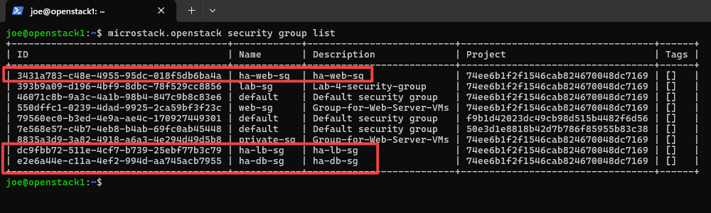
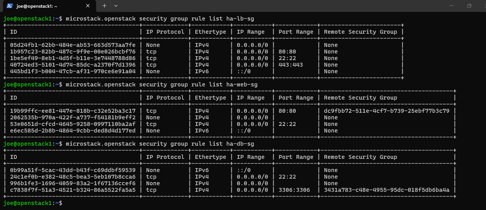
The backend fleet was deployed into a private network (VPC). A Virtual Private Cloud is considered "isolated" because it operates as a logically separated network boundary with its own private IP address space (192.168.100.x). By default, instances inside this subnet lack a direct internet gateway—meaning they cannot be routed to from the outside world, effectively shielding them from public exposure.
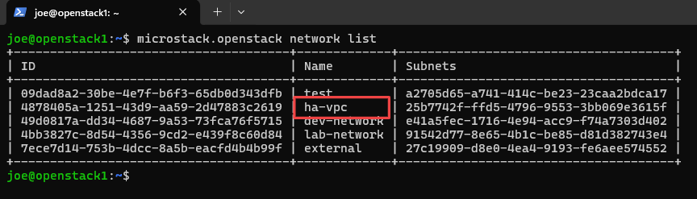
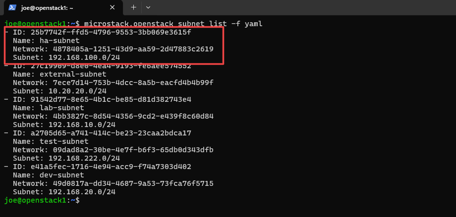
The cluster nodes were instantiated using the OpenStack CLI. To bypass an OpenStack metadata timeout error that resulted in empty authorized_keys files, the instances were deployed using the --config-drive true flag, physically mounting the SSH keys during the boot sequence:
During instantiation, the OpenStack Nova Scheduler returned an HTTP 500: NoValidHost exception. Investigation revealed that the scheduler enforces a strict 1:1 disk allocation ratio. Launching the fourth node pushed the theoretical reserved disk space above the hypervisor's capacity, even though physical space was available. This was resolved by injecting an override into nova.conf.d/override.conf:
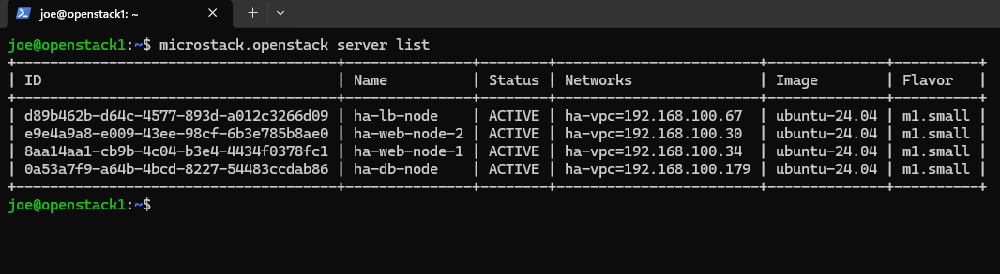
To expose the load balancer to the external network while keeping the web and database nodes completely private, a Floating IP was generated and mapped exclusively to ha-lb-node:
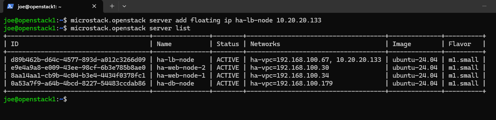
With the Floating IP attached to the Load Balancer, an initial SSH connection was successfully established from the host machine into the private cloud.
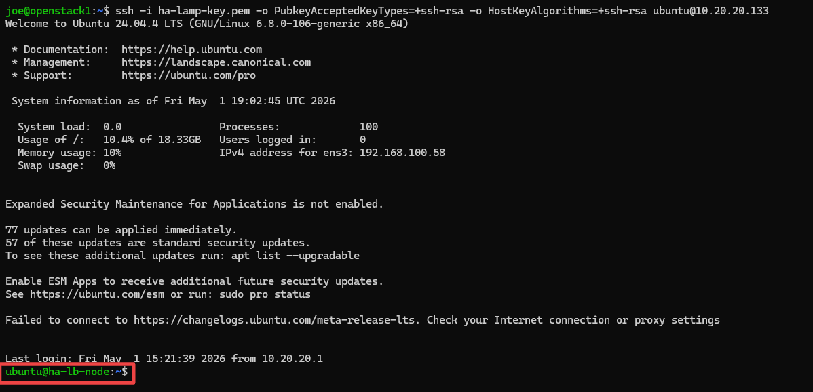
However, once inside the VM, outbound network requests (such as apt update) were timing out. This represented a complex networking failure typical of nested virtualization (running a cloud inside a VM). Resolving this required configuring all three layers of the network architecture simultaneously:
sudo ip link set dev ens3 mtu 1300echo "nameserver 8.8.8.8" | sudo tee /etc/resolv.conf10.20.20.x subnet. To allow internet traffic to flow properly to the Load Balancer, a static route and IP masquerading were added to the physical host routing table:route add 10.20.20.0 mask 255.255.255.0 192.168.230.129
With the network constraints resolved, Apache2 was successfully installed across the backend fleet:
On the ha-lb-node, the default Nginx site was removed and replaced with a custom upstream routing block pointing to the private VPC IPs of the newly provisioned Apache web nodes.
Load Balancing Algorithm: By default, Nginx utilizes a Round-Robin algorithm. This means the load balancer acts as a strict traffic cop, routing the first incoming user to Node 1, the second user to Node 2, the third back to Node 1, and so on. This ensures an even distribution of CPU and memory load across the backend fleet.
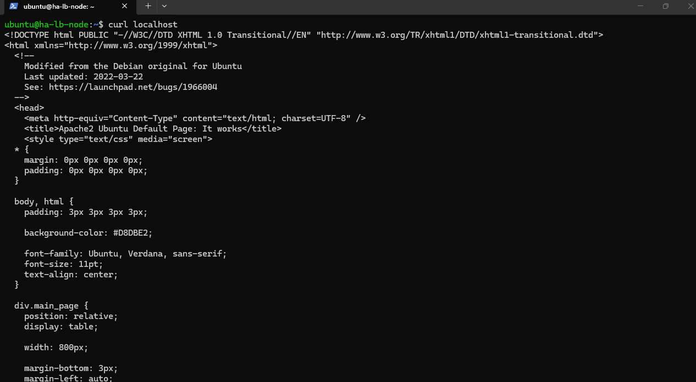
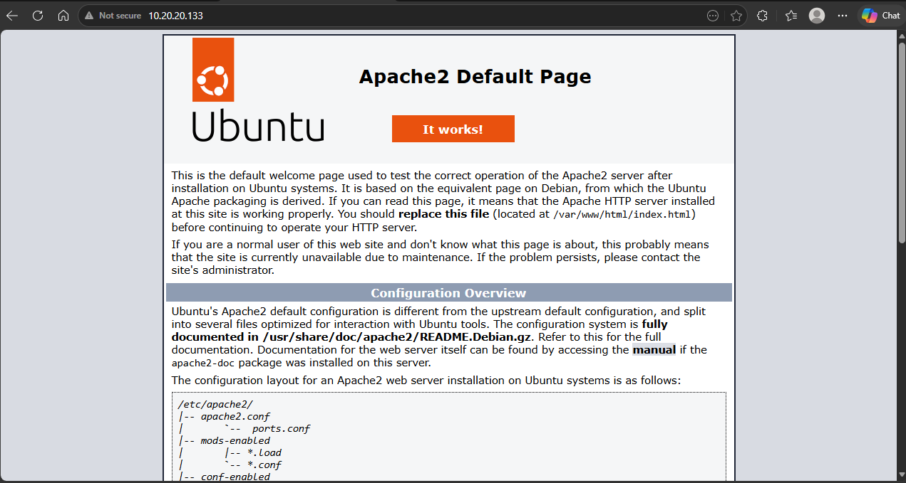
Because the database node (192.168.100.59) resides exclusively on the private subnet with no public IP, direct SSH access was impossible. To securely configure the database, the Nginx Load Balancer was utilized as a Bastion Host (Jump Server). A direct tunnel was established using an SSH ProxyCommand, elegantly bypassing the external routing limitations:
After applying the standard VPC MTU and DNS configurations (as established in Section 5), MySQL Server was installed. By default, MySQL binds strictly to the local loopback interface (127.0.0.1). To allow the Apache web nodes to communicate with the database, the configuration file was modified to bind to 0.0.0.0 over Port 3306.
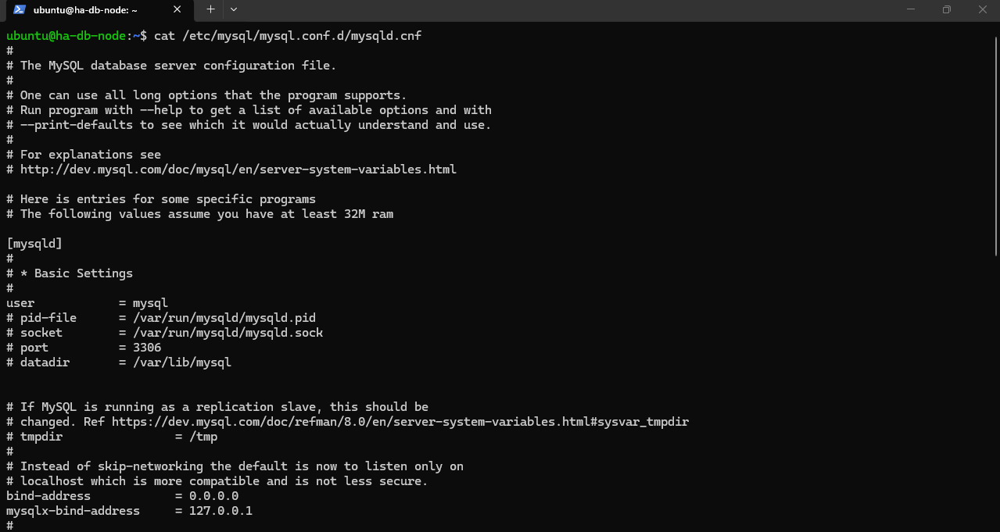
After installing PHP, the web servers initially returned raw PHP source code instead of executing it. This occurred because Ubuntu 24.04 Apache utilizes the mpm_event module, which conflicts with standard PHP execution. The event module was explicitly disabled, the mpm_prefork engine was ignited, and the PHP 8.3 module was enabled:
To establish a secure database connection, a remote web user had to be created. An attempt to create this user via a single-line bash command failed with a -bash: !': event not found error. This was caused by the bash shell attempting to parse the exclamation mark in the database password (LampPass123!) as a history expansion variable.
Solution: The bash terminal was bypassed by dropping directly into the MySQL interactive shell on the database node, securely executing the remote user provisioning:
A dynamic PHP validation script was deployed to both web nodes to dynamically grab the internal hostname and connect to the Database Node (192.168.100.59) using the webuser credentials.
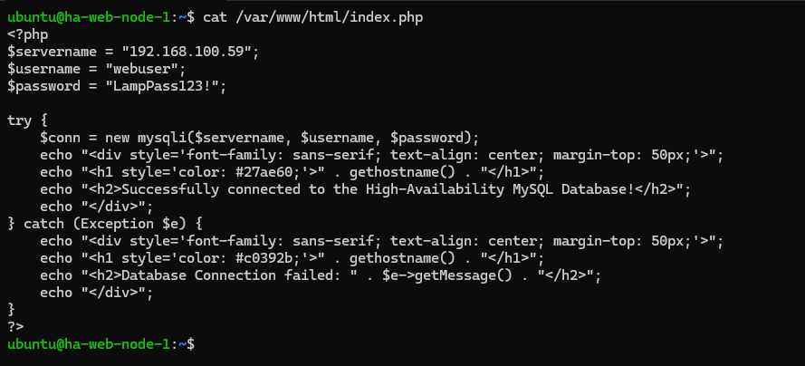
Upon accessing the Nginx Load Balancer's public IP via a private browser window, the PHP script successfully executed. Subsequent refreshes confirmed that the Nginx reverse proxy was actively distributing the HTTP load (Round-Robin) across ha-web-node-1 and ha-web-node-2, while both successfully maintained connections to the backend database.
Project Requirements Fulfillment
This deployment successfully fulfills all requirements for the Advanced Cloud Deployment mini-project:
VPC Security & Zero-Trust Isolation
The architecture was engineered with a strict security-first posture. By utilizing OpenStack VPCs and isolated Security Groups, the application backend (Web Nodes and Database Node) operates completely in the dark. They possess no public IP addresses. The only entity capable of receiving external traffic is the Nginx Load Balancer. Consequently, external threat actors cannot directly access, ping, or SSH into the application or data layers. Furthermore, the internal Security Group rules strictly regulate traffic flow (e.g., the database will only accept traffic originating from the web servers' security group). All administrative access requires utilizing the Load Balancer as a secure Bastion Jump Host, fulfilling the highest standards of cloud network security.